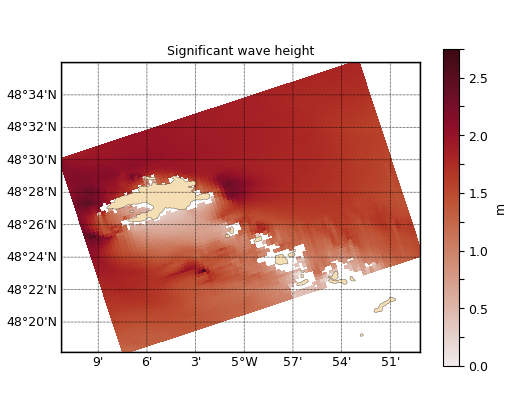

1.3.3.5.3.5. Tracé sur grille oblique de sorties SWAN¶
Voir : map().

Carte de Hs du modèle SWAN, sur grille oblique.
# -*- coding: utf8 -*-
# %% Imports
from vcmq import cdms2, MV2, data_sample, code_base_name, map2
# %% Read Hs
f = cdms2.open(data_sample('swan.four.nc'))
lon = f('longitude')
lat = f('latitude')
hs = f('HS', squeeze=1)
f.close()
# %% Plot it specifying its irregular grid
map2(hs, xaxis=lon, yaxis=lat, figsize=(6, 4), cmap='cmocean_amp',
long_name = 'Significant wave height', fill='pcolormesh', contour=False,
savefigs=code_base_name(ext='png'), left=.12, right=1, show=False)